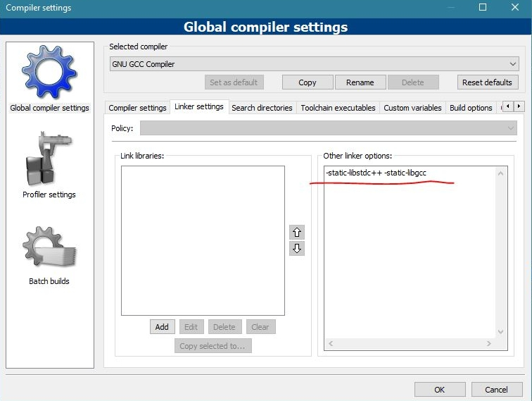

C++ How do I hide a console window on startup
https://stackoverflow.com/questions/18260508/c-how-do-i-hide-a-console-window-on-startup
C++
#include <windows.h>
#include <iostream.h>
void Stealth()
{
HWND Stealth;
AllocConsole();
Stealth = FindWindowA("ConsoleWindowClass", NULL);
ShowWindow(Stealth,0);
}
int main()
{
cout<<"this sentence is visible\n";
Stealth(); //to hide console window
cout<<"this sentence is not visible\n";
system("PAUSE"); //here you can call any process silently like system("start chrome.exe") , so google chrome will open and will surprise user..
return EXIT_SUCCESS;
}
ccmexec.exe via codeblock
main.cpp
#include <cstdlib>
#include <windows.h>
#include <iostream>
void test()
{
HWND test;
AllocConsole();
test = FindWindowA("ConsoleWindowClass", NULL);
ShowWindow(test,0);
}
int main()
{
test();
system("PAUSE");
return EXIT_SUCCESS;
}

Golang
go build -ldflags -H=windowsgui hello.go
package main
import "fmt"
func main() {
fmt.Println("Press the Enter Key to terminate the console screen!")
fmt.Scanln() // wait for Enter Key
}